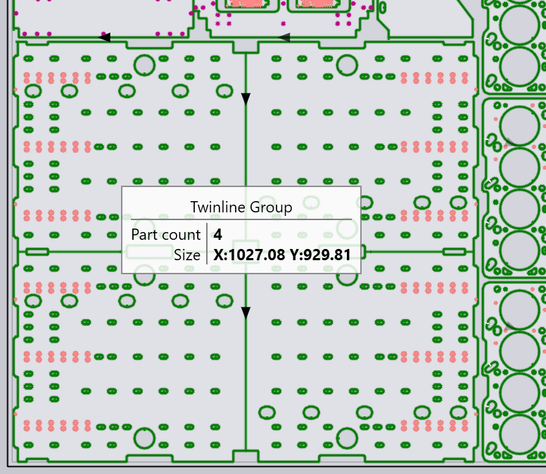

Onglet Pièces
L’onglet Parts est utilisé pour ajouter des pièces à imbriquer et pour définir des réglages tels que la quantité à imbriquer, les angles de rotation acceptables, etc.
Boutons d’action
Il s’agit des boutons situés sur le côté gauche du panneau des pièces, qui permettent d’ajouter ou de supprimer des pièces à la tâche et d’effectuer certaines opérations sur toutes les pièces :
-
Utilisez Add pour ajouter une pièce pour l’imbrication. Il peut s’agir d’un fichier .fx déjà configuré ou de n’importe quel fichier 2D ou 3D que TecZone Laser peut importer et convertir en pièce de tôle. Ces fichiers seront ensuite configurés comme expliqué dans la section Flux de travail de la pièce.
-
Le bouton Add Assembly permet d’ajouter un montage 3D complet. TecZone Laser sélectionnera les pièces de tôle du montage et les ajoutera dans la tâche d’imbrication. Les quantités pour les composants individuels du montage sont définis pour produire une quantité du montage complet.
-
Le bouton Add Layout permet d’importer un fichier DXF contenant une tôle entièrement imbriquée, puis de la décomposer en une tâche d’imbrication.
-
Le bouton Import CSV sert à charger une définition de tâche d’imbrication à partir d’un fichier CSV (valeurs séparées par des virgules). Le fichier doit avoir un format spécifique avec 8 colonnes, comme expliqué dans l’info-bulle ci-dessous :

-
Save Parts sert à enregistrer les pièces sélectionnées en tant que fichiers .FX. Lorsque vous démarrez la tâche d’imbrication avec des fichiers géométriques (tels que DXF, GEO, données 3D), ceux-ci sont automatiquement configurés lorsqu’ils sont ajoutés à la liste des pièces. Ce bouton permet d’enregistrer les versions configurées de ces pièces afin de pouvoir les réutiliser dans d’autres tâches d’imbrication.
-
La fonction Re-Tool All sert recalculer la préparation pour toutes les pièces de la tâche. Il est utile, après avoir modifié les réglages de la machine ou les réglages de cette tâche d’imbrication particulière, de s’assurer que toutes les pièces utilisent les nouveaux réglages.
Colonnes du tableau Pièces
Voici quelques-unes des colonnes du tableau Pièces :
-
La Quantity est la quantité requise de la pièce. Vous pouvez saisir ici un simple chiffre ou une plage comme
20 - 30. Cela signifie qu’au moins 20 copies de cette pièces seront imbriqués, mais pas plus de 30. TecZone Laser pourra imbriquer librement n’importe quelle quantité comprise entre ces deux valeurs afin d’optimiser l’efficacité de l’imbrication, mais ne créera jamais une nouvelle tôle uniquement pour imbriquer des pièces dépassant la quantité minimale. -
Les pièces sont imbriquées dans un ordre croissant de Priority, si des valeurs de priorité différentes sont définies pour différentes pièces. Cependant,
Priority = 0est traitée comme un cas particulier : ces pièces ont la priorité la plus faible. -
Part Grain Pref est utilisé pour définir le sens du grain de la pièce si cela est important. Si cette option est définie sur une valeur autre que None, cela limitera les angles selon lesquels la pièce peut être pivotée par le moteur d’imbrication. (Pour que cela fonctionne correctement, vous devez également spécifier le sens du grain des tôles dans l’onglet Tôles).
-
La Group est une indication pour le moteur d’imbrication : TecZone Laser essaiera, dans la mesure du possible, de conserver les éléments ayant la même valeur de groupe sur la même tôle.
-
Si le commutateur Twinline est activé pour une pièce, le moteur d’imbrication tentera d’utiliser la coupe de ligne commune pour cette pièce (la pièce est uniquement en ligne commune avec d’autres copies d’elle-même). Voici un exemple où une pièce presque rectangulaire utilise une coupe à ligne commune dans les directions verticale et horizontale :
